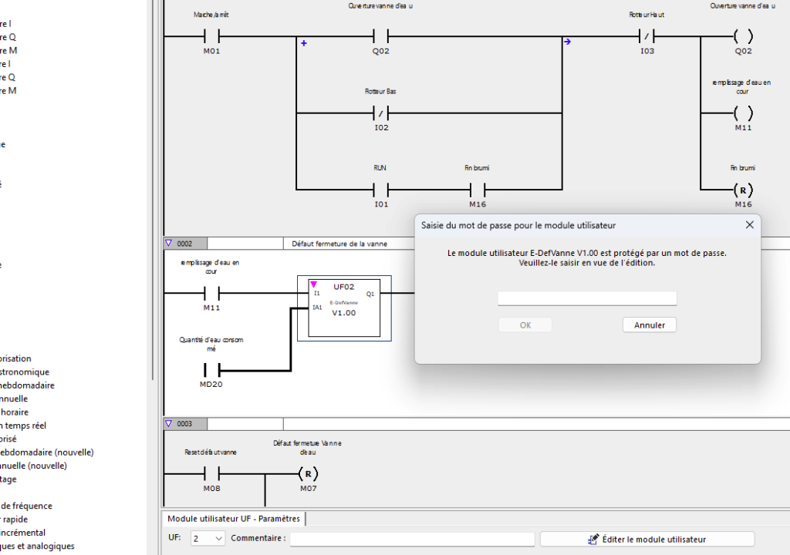

Mot de passe inattendu sur Bloc UF
🔍 Symptôme
Demande d'un mot de passe inexistant lors de la modification d'un bloc fonction "UF" en langage ST.
Après modification d’un bloc fonction “UF” un mot de passe inexistant est demandé à la réouverture alors qu’il n’en à jamais été saisi.

💻 Solution
Le bug survient si le dernier caractère du script ST est un point-virgule.
"EASYsoft 8 had a problem to read this UFB and as result comes a password on it. When the last charactere is CR/LF => no problem."
Email de Francois Navarre
Hello Bruno,
The developpment find that when an UFB is writed in ST language (EASYSoft7 or 8) and when the last characktere is a “;” then the EASYsoft 8 had a problem to read this UFB and as result comes a password on it. When the last charactere is => no problem Will be corrected in the Version 8.01
Problem could occure with LP Language too but it append only one time and they actually don’t find why this append…
Action : Terminer le script par un retour à la ligne (CR/LF). Corrigé en version 8.01.